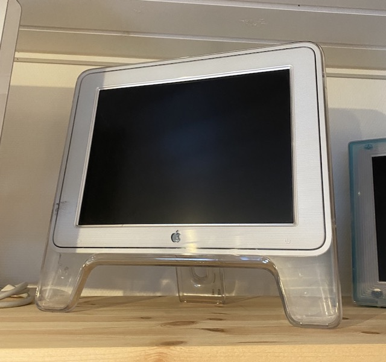

Macseum - Morten's Apple museum

Studio Display 15" (2000)
This screen was introduced along with the
Power Mac G4 Cube
and together they are a very iconic duo.
Read more on Wikipedia
Continue the tour
Look to the left
Look down
Look to the right
Follow @mortengregersen
Follow @macseumdk